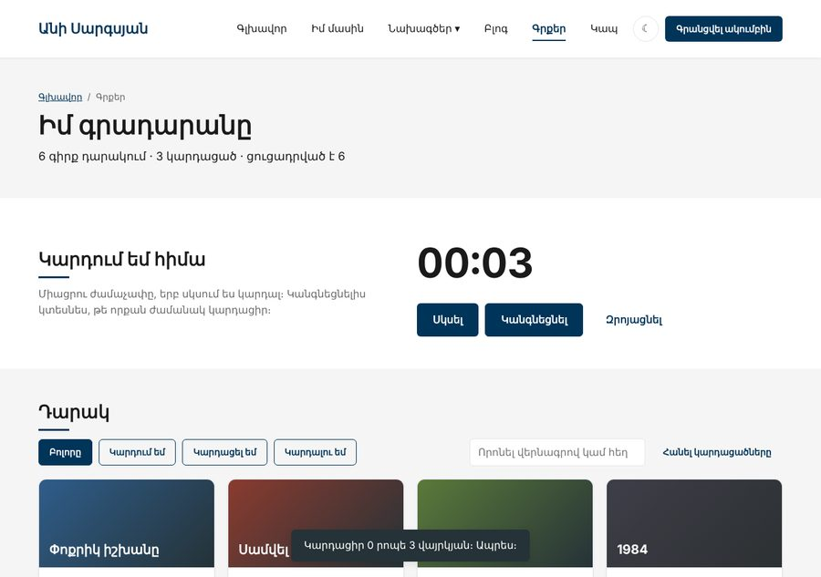

Տնային աշխատանք · JS Դաս 14 · մինի-նախագիծ
Դարակը, ավելացված գրքերը և թեման պահվում են localStorage-ում։ Ավելանում են «Կարդում եմ հիմա» ժամաչափը, toast ծանուցումները, «Վեր» կոճակը, որը երևում է 400px-ից հետո, և որոնում debounce-ով։
Դաս 01–14․ localStorage, JSON, try/catch, setTimeout, setInterval, clearInterval, scrollY, scrollTo։

Աշխատիր քո կայքում (կամ նախորդ դասի օրինակում)։ CSS-ը տրված է, որ կենտրոնանաս JS-ի վրա․ HTML/CSS-ը արդեն գիտես։
starter/css/books-14.css — CSS-ը, որ ավելանում է այս դասինstarter/pages/books.html — «Գրքեր» էջի markup-ը (JS չկա, միայն <script>-ները)save(key, value) և load(key, fallback)՝ try/catch-ովlet books = load(BOOKS_KEY, INITIAL_BOOKS)render()-ի վերջում։ Ինչու՞ այնտեղfunction render() {
// ... քարտեր և վիճակագրություն
save(BOOKS_KEY, books); // ← ամբողջ պահպանումը
}applyTheme(theme)՝ դաս, նշան, aria-labelapplyTheme(load(THEME_KEY, "light")), սեղմելիս՝ savesetInterval ամեն վայրկյան, ցուցադրում՝ mm:ss (padStart)clearInterval և toast «Կարդացիր X րոպե»showToast(message)՝ 3 վայրկյան, նոր ծանուցումը երկարացնում է ժամանակըis-visible 400px-ից հետո, սեղմելիս՝ scrollTo({ top: 0, behavior: "smooth" })clearTimeout + setTimeout 300 մվani:books և ani:theme| Սխալ | Ինչպես ուղղել |
|---|---|
Թարմացնելուց հետո [object Object] | Պահել ես առանց JSON.stringify-ի |
| Ժամաչափը արագանում է | Երկրորդ setInterval․ ստուգիր intervalId !== null |
load is not defined այլ էջերում | storage.js-ը միացված չէ կամ site.js-ից հետո է |
| Գաղտնի ռեժիմում սխալ | Առանց try/catch-ի localStorage-ը կարող է սխալ գցել |
Սրանք Դաս 14-ի տնային աշխատանքի կետերն են։ «մինի-նախագծում» նշվածները արդեն կատարել ես վերևի քայլերում, մնացածը կատարիր առանձին ֆայլերում։
localStorage-ում։ Էջը թարմացնելիս ցույց տուր «Բարև, [անուն]»։save(key, value) և load(key, fallback) ֆունկցիաները try/catch-ով։ Ստուգիր օբյեկտով, զանգվածով և չգոյություն ունեցող բանալիով։ մինի-նախագծումժժ:րր:վվ ձևաչափով, padStart-ով։clearInterval-ով։localStorage-ում, (բ) որոնման դաշտ debounce-ով, (գ) «Ջնջել բոլորը» կոճակ confirm-ով։ մինի-նախագծումԵրբ բաժին 03-ի բոլոր կետերը նշված են, բացիր օրինակը և դրա կոդը example/js/-ում։ Գտիր մեկ բան, որ դու արել ես այլ կերպ, և մտածիր՝ որն է ավելի հասկանալի և ինչու։ Քո լուծումը կարող է տարբերվել և լինել ճիշտ։